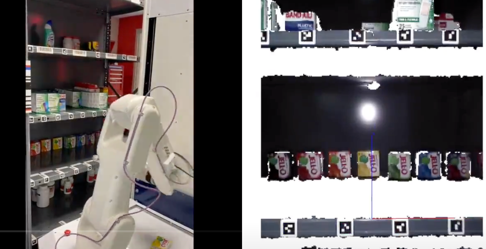
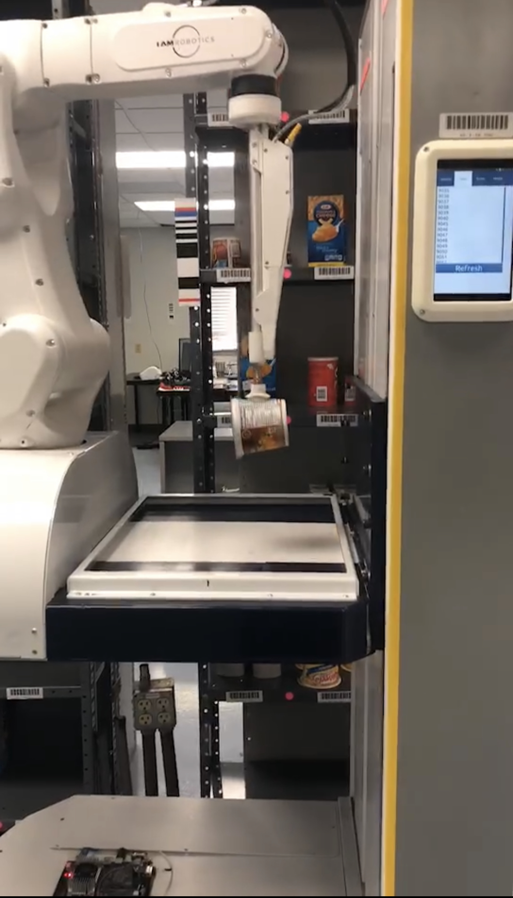
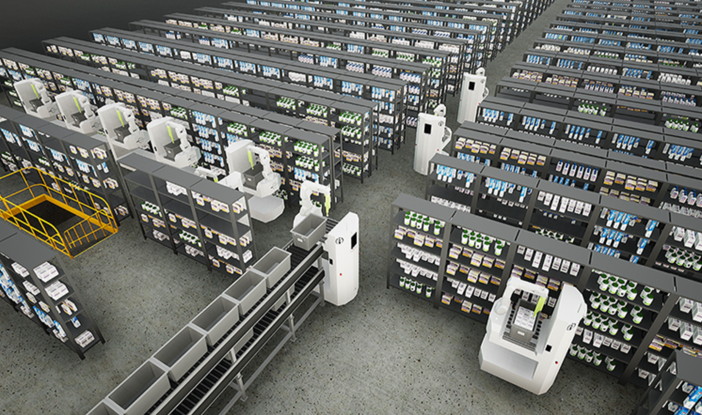
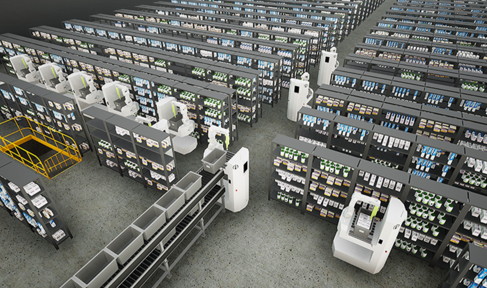

AMMRs Warehouse Pick-up Robot


 

MMRs Warehouse Pick-up Robot
The AMMRs autonomous mobile manipulation robots (AMMRs) are transforming e-commerce
fulfillment centers by providing a complete automation solution for warehouses
and distribution centers seeking to optimize the long-tail business model.
AMMRs uses Orbbec's 3D camearas and ArUco markers (special digital tags) to see & locate
objects in real-time and identify product slots on shelving, which improves picking success.
The Swift Product Solution works tirelessly to ensure that customer orders are ready for shipping,
on time, every time. With innovative technology and world-class engineering, the solution easily i
ntegrates with existing warehouse management system and infrastructure to save time and money quickly.
Now AMMRs has been installed over 20 pharmacy stores throughout the United States.